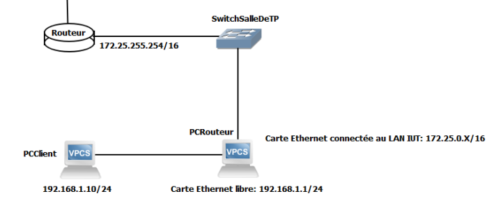

Projet réseau
Le but de ce projet était de mettre en place un réseau privé en se servant d'un PC comme routeur.
Il a été réalisé lors d'un travail pratique en groupe de 2 et sous la supervision d'un professeur sur un créneau de 3 heures.

Lors de ce projet, le PC routeur et le PC client était relié en direct à l'aide d'un câble ethernet. Le PC dit routeur était ainsi relié au réseaux fonctionnel de la salle ainsi qu'au PC client. Le PC client n'est quant à lui relié qu'au PC routeur le rendant dépendant de celui ci afin d'accéder à internet.
Afin de faire fonctionné ce réseau, il était nécessaire de mettre en place un plan d'adressage IP ainsi que d'activer l'ip forwarding afin de relier les deux cartes ethernet du PC routeur. De plus, j'ai également mis en place du NAT dans le but d'avoir accés à internet depuis le PC client sans oublier de configurer le DNS.
Ce projet a développé ma capacité à travailler en équipe car il était nécessaire de communiquer afin de mettre en place un réseau cohérent. De plus, le fait de travailler en équipe nous a permis de nous aider mutuellement afin de mieux comprendre ces nouvelles notions.
Ce projet à été pour moi une réussite en terme de monté en compétences en terme de mise en place de réseau et d'utilisation du NAT.